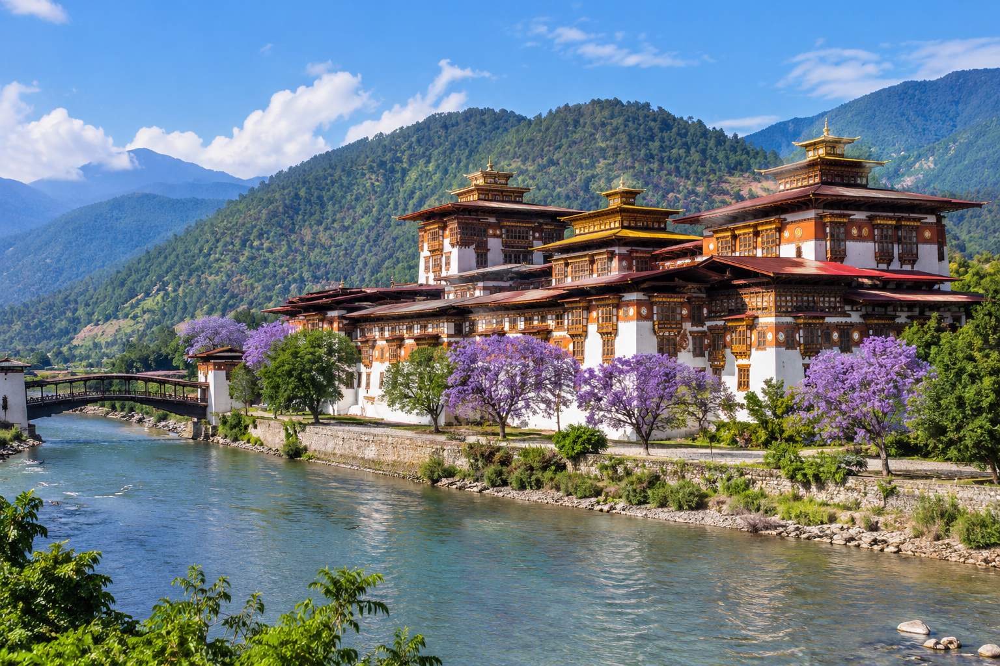

|
PUNAKHA DZONG
The Palace of Great Happiness A Beautiful Treasure of Bhutan |
|
WELCOME TO PUNAKHA DZONG
Discover the history, beauty and cultural importance of one of Bhutan's most famous dzongs. |
01. IntroductionPunakha Dzong is one of the most beautiful and historic dzongs in Bhutan. It is also known as Pungthang Dewa Chenpoi Phodrang, meaning the Palace of Great Happiness. It stands between the Pho Chhu and Mo Chhu rivers. 02. HistoryPunakha Dzong was built in 1637 by Zhabdrung Ngawang Namgyal. It played an important role in the history and unification of Bhutan. It served as the capital of Bhutan until 1955. The first King of Bhutan was crowned here in 1907. 03. ImportancePunakha Dzong is an important religious, cultural and historical site. It serves as the winter residence of the Central Monastic Body. Its beautiful courtyards, traditional architecture and wooden carvings attract many visitors. 04. Natural BeautyThe dzong is located at the meeting point of the Pho Chhu and Mo Chhu rivers. Its beautiful surroundings, green landscapes and purple jacaranda flowers make it a special place to visit. |
| EXPLORE MORE |
| Website | Learn About |
|---|---|
| Bhutan Travel | Tourism and famous places |
| UNESCO | World heritage and culture |
| Bhutan Broadcasting Service | Bhutanese news and information |
| Royal Government of Bhutan | Official information about Bhutan |
CONCLUSIONPunakha Dzong is a proud symbol of Bhutan's history, culture and religion. We should protect this precious heritage and pass it on to future generations. |
|
STUDENT INFORMATION
Name: Namgay Wangchuk Class: 9 |
Picture of Punakha Dzong

Designed by Namgay Wangchuk | Class 9